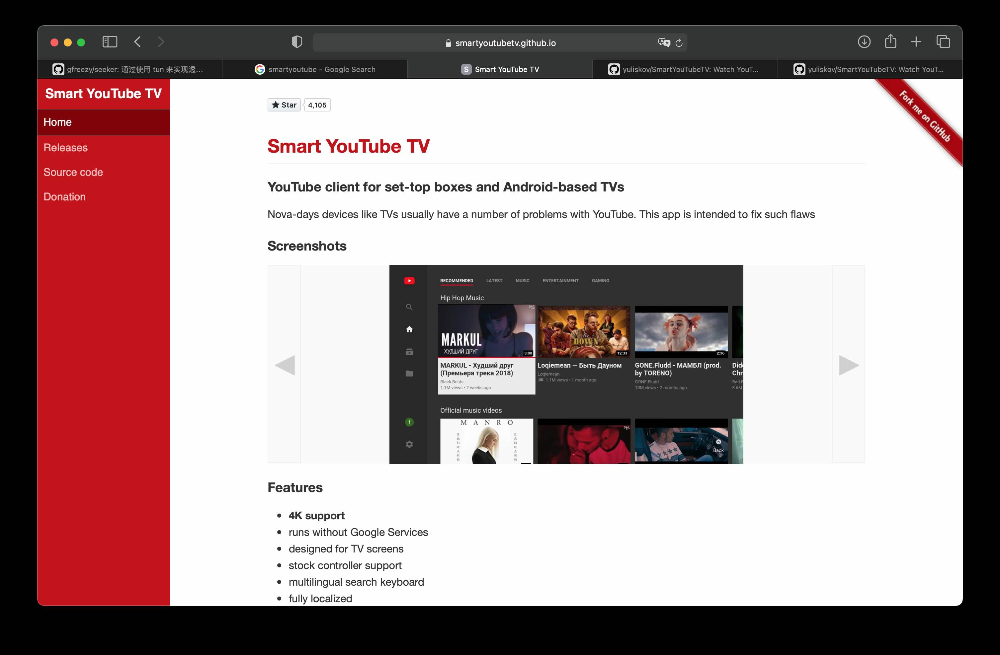

Cómo ver YouTube en la TV | Original, traducido por IA
Aquí asumimos que sabemos cómo acceder a Internet de manera científica, entonces, ¿cómo ver YouTube en la televisión? Configurar el router puede ser un poco complicado. Aquí utilizamos una aplicación para facilitarlo.
SmartYoutubeTV

Descárgalo. Instálalo en la televisión usando una memoria USB.

A continuación, en la aplicación cliente de acceso a Internet científico, selecciona Allow connect from Lan. Esto significa que permite que otros dispositivos en la red local se conecten a nuestro dispositivo para acceder a Internet.
Luego, en las opciones de configuración de SmartYoutubeTV, simplemente configura el puerto.

Después de configurar todo, haz clic en el botón Probar. Nota que aquí he usado un proxy de tipo SOCKS. Intenté varias veces con HTTP y no funcionó. Una vez que la prueba sea exitosa, haz clic en Aceptar y luego prueba de nuevo. Además, no necesariamente tienes que configurar 192.168.1.3, depende de cuál sea la dirección IP de tu red local.
Así es como se ve, muy conveniente.

gfreezy/seeker
Este es un proyecto de GitHub. La página principal del proyecto tiene instrucciones de uso. Aquí se complementan algunos puntos adicionales.

Logra un proxy transparente mediante el uso de tun. Implementa modos similares al modo mejorado y al modo de puerta de enlace de Surge.
Desde el principio, utilicé seeker para convertir mi computadora en un enrutador de acceso a Internet científico. Aquí les cuento mi configuración:
verbose: true
dns_start_ip: 10.0.0.10
dns_servers:
- 223.5.5.5:53
- 114.114.114.114:53
dns_timeout: 1s
tun_name: utun4
tun_ip: 10.0.0.1
tun_cidr: 10.0.0.0/16
dns_listen: 0.0.0.0:53
gateway_mode: true
ping_timeout: 2s
probe_timeout: 30ms
connect_timeout: 1s
read_timeout: 30s
write_timeout: 5s
max_connect_errors: 2
servers:
- name: servidor proxy http
addr: 0.0.0.0:7890
protocol: Http
- nombre: servidor proxy https dirección: 0.0.0.0:7890 protocolo: Https
rules:
- ‘MATCH,PROXY’ ```
Al principio, utilicé un proxy socks5. La configuración se escribió de la siguiente manera:
servers:
- name: servidor proxy socks5
addr: 0.0.0.0:7891
protocol: Socks5
Sin embargo, hay varios problemas. A menudo no se puede conectar. El documento tiene este párrafo:
Al utilizar un proxy socks5, es necesario configurar todos los dominios de conexión directa en el archivo de configuración. Si estás utilizando ss o vmess, también debes agregar el dominio del servidor ss o vmess al archivo de configuración. De lo contrario, podría producirse un bucle infinito, lo que impediría el uso normal.
Puede ser esta la razón.
Usar seeker implica que necesitas tener una computadora ejecutándolo y usarla como un enrutador. Por otro lado, la configuración mediante proxy es mucho más flexible. Puedo usar un iPhone o un teléfono Android para compartir el puerto del proxy.
Captura de pantalla de la televisión
Al escribir este artículo, me pregunté cómo tomar capturas de pantalla en la televisión. En mi casa usamos un televisor Xiaomi. Puedes presionar dos veces seguidas el botón Home en el control remoto para abrir el menú de gestión de aplicaciones.

¿Ves el botón de captura de pantalla? Luego también puedes compartirlo fácilmente con WeChat. Aquí también puedes cerrar todas las aplicaciones. Si alguna aplicación se bloquea, puedes manejarla de esta manera.
Bien. Vamos a ver el mundo en una pantalla grande.